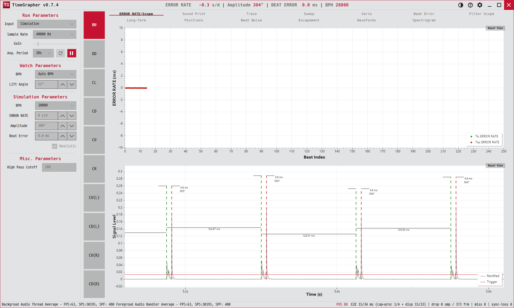

1. Rate/Scope
실시간 파형과 비트별 박자 오차를 함께 보여 주는 가장 기본 탭. "시계가 돌고 있고, 매 박자가 제시간에 오는가?"
The fundamental tab: live waveform plus per-beat Error Rate. "Is the watch running, and is each beat on time?"
A aba fundamental: forma de onda ao vivo mais o Error Rate por batida. "O relógio está funcionando e cada batida chega no tempo certo?"

용도 · Purpose · Finalidade
신호가 제대로 검출되는지(스코프)와, 검출된 똑·딱이 얼마나 정확한 박자인지(레이트)를 동시에 확인합니다. 측정을 시작하면 가장 먼저 보는 화면입니다.
Confirms that the signal is being detected (scope) and how accurately the detected tics/tocs are timed (rate) — the first screen you check when a run starts.
Confirma que o sinal está sendo detectado (scope) e com que precisão os tic/toc detectados são temporizados (rate) — a primeira tela que você verifica quando uma medição começa.
무엇이 보이나 · What's shown · O que é exibido
| X축 · X · X | Y축 · Y · Y | 계열 · Series · Séries | |
|---|---|---|---|
| Error Rate (위)Error Rate (top)Error Rate (em cima) | 비트 인덱스beat indexíndice da batida | Error Rate (ms), 0 중심 대칭 | Tic Error Rate 초록 점 · Toc Error Rate 빨강 점 |
| 스코프 (아래)Scope (bottom)Scope (embaixo) | Time (자동 스크롤) | Signal Level (0–0.1) | 파란 선 Rectified 정류 파형 · 빨간 선 Trigger 검출 임계값 · 똑/딱 검출 마커 |
읽는 법 · How to read · Como ler
- 스코프 — 주기적인 봉우리가 빨간
Trigger선을 또렷이 넘으면 검출이 잘 되는 상태입니다. 봉우리가 트리거에 못 미치면 Gain을 올리세요.Scope — periodic peaks should clearly cross the redTriggerline for reliable detection. If they don't, raise the Gain.Scope — os picos periódicos devem cruzar nitidamente a linha vermelhaTriggerpara uma detecção confiável. Se não cruzarem, aumente o Gain. - Error Rate — 초록·빨강 점이 0 근처에 모이면 정시·안정. 위/아래로 흩어지면 불안정, 한쪽으로 치우치면 빠르거나 느린 상태입니다.Error Rate — green/red dots clustered near 0 = on-time and stable. Wide scatter = unstable; a consistent offset = running fast or slow.Error Rate — pontos verdes/vermelhos agrupados perto de 0 = no tempo e estável. Dispersão ampla = instável; um desvio constante = adiantando ou atrasando.
좋은 예: 트리거를 넘는 규칙적 봉우리 + 0선에 붙은 점들. 나쁜 예: 약한 파형(검출 누락) 또는 크게 퍼진 점들.
Good: regular peaks over the trigger + dots hugging the 0 line. Bad: weak waveform (missed detection) or widely scattered dots.
Bom: picos regulares acima do trigger + pontos colados na linha do 0. Ruim: forma de onda fraca (detecção perdida) ou pontos muito espalhados.
옵션 · Options & tips · Opções e dicas
- 스코프를 세로로 팬/줌하면 라이브 추적이 멈춥니다. 다시 따라가려면 뷰를 리셋(전체로 줌아웃)하세요.Panning/zooming the scope vertically freezes live-follow; reset the view (zoom fully out) to re-arm it.Deslocar/dar zoom no scope verticalmente congela o acompanhamento ao vivo; redefina a visualização (zoom totalmente para fora) para reativá-lo.
- 파형이 작으면 Scope Scale로 키워 볼 수 있습니다(검출에는 영향 없음).Use Scope Scale to magnify a small waveform (display only).Use o Scope Scale para ampliar uma forma de onda pequena (apenas exibição).